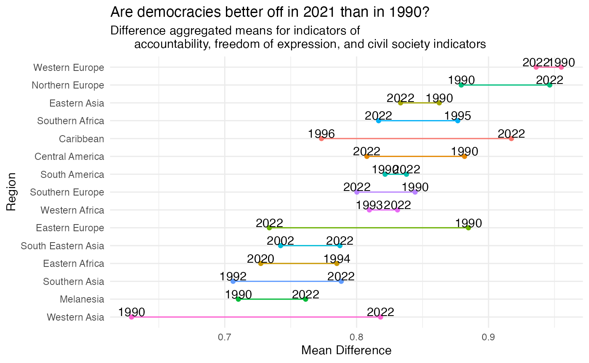

Working with manystates data
Henrique Sposito and Jael Tan
2023-05-26
Source:vignettes/manystates_data.Rmd
manystates_data.RmdHave democracies become more free and accountable since the 1990s?
manystates provides data on states in the international system across time, assembling together datasets from reputable sources including The Correlates of War project, The Issue Correlates of War project, and Gleditsch and Ward’s dataset on interstate system membership. The package can also be used to study related features such as political regimes (regimes database), contiguity (contiguity database), leadership (leaders database), and economic indicators (economics database).
To illustrate the uses of the data, we explore here the question of whether states have indeed become more free and accountable. Since 2017, more than half of the states in the world have become democracies. However, at the same time, influential works have theorized about the recent “democratic decay” and “stretch”; especially with the recent(ish) elections of leaders with authoritarian tendencies in several democracies.
Below, we use manystates to study democratic accountability using data from the regimes database as well as the import_vdem() function to extract Variaties of Democracy Data (VDEM) data. The regimes database contains data on political regimes in the Polity5 and Freedom House datasets.
Data
For many years, Freedom House data has been widely relied upon, including in the media, as an indicator of states that are democratic. VDEM data has been developed more recently by scholars for a detailed and comprehensive understanding of democracy. In this vignette, we will focus on Freedom House and VDEM data which include electoral, judicial, and civil dimensions. Yet, Freedom House and VDEM projects also have slightly different approaches to the measurement of democracy, which we will explore below. Let’s import the data first. Due to the size of VDEM data, we rely on the import_vdem() function to download the data, contrary to the Freedom House dataset which is stored internally.
library(manystates)
fh <- manystates::regimes$FreedomHouseFull
vdem <- import_vdem()Let’s examine first the data in VDEM by selecting a few variables that are helpful to investigate freedom and accountability in democracies since the 1990s.
First, we need to know if a state is democratic and to what extent. The “v2x_regime” variable in VDEM differentiates between two types of democratic regimes (electoral and liberal) :
- Electoral democracy: free and fair multiparty elections…
- Liberal democracy: free and fair multiparty elections, access to justice, transparent law enforcement, respect for personal liberties, rule of law…
Second, we need indicators of democracy. Let’s focus on transparency and accountability (“v2x_accountability_osp”), freedom of expression (“v2x_freexp_altinf”), and civil society participation (v2x_cspart).
These variables were transformed into scales (e.g. 0-1) from ordinal data from the surveys (ordered categorical) as follows:
- Accountability index: low to high (0-1)
- Freedom of expression: low to high (0-1)
- Civil society participation: low to high (0-1)
library(dplyr)
library(tidyr)
vdem <- vdem %>% dplyr::select(StateName, stateID, Year,
v2x_regime, v2x_accountability_osp,
v2x_freexp_altinf, v2x_cspart) %>%
# select only the variables of interest
dplyr::filter(Year > 1989, v2x_regime == 2 | v2x_regime == 3) %>%
# filter for last 30 years (bigger than 1989) and for democracies only
dplyr::rename(regime = v2x_regime,
freedom_expression = v2x_freexp_altinf,
accountability = v2x_accountability_osp,
civil_society = v2x_cspart) %>% # rename some of these variables
dplyr::mutate(regime_type = case_when(regime == 2 ~ "Electoral Democracy",
regime == 3 ~ "Liberal Democracy")) %>%
# create a new regime type variable and rename the categories within
arrange(desc(Year)) %>% # arrange by year
drop_na() # drop rows where there is at least one NA obs...The Freedom House data contains state year data starting from the year 2012. Therefore, it is much smaller then VDEM. Freedom House also organises its data somewhat differently, disaggregating the concept of democracy into two components: political rights (“PR rating” - “A” + “B” + “C”) and civil liberties (“CL rating” - “D” + “E” + “F” + “G”). The FreedomHouseFull dataset also contains the raw scores of each state for each question, which are then grouped into categories labelled with alphabets from “A” to “G”. In terms of indicators of democracy, accountability is captured in category “C”, freedom of expression in category “D”, and civil society participation in category “B”. Let’s subset the data accordingly.
fh <- dplyr::select(fh, c(StateName, stateID, Year, PR, CL, B, C, D)) %>%
# select only the variables of interest
dplyr::filter(PR > 17) %>% # filter for democracies only
manydata::transmutate(freedom_expression = D/16,
accountability = C/12,
civil_society = B/16) %>%
# rename and standardise some of these variables
dplyr::mutate(regime_type = ifelse(CL > 52, "Liberal Democracy",
"Electoral Democracy")) %>%
# create a new regime type variable and rename the categories within,
# benchmark score derived from Scores table in Freedom House Codebook
arrange(desc(Year)) %>% # arrange by year
drop_na() # drop rows where there is at least one NA obs...Investigate the data
Let’s first compare the 10 states with the highest accountability scores (on average) in each dataset since 2012.
library(kableExtra)
vdem_account_10 <- vdem %>% # call data without assigning it
dplyr::filter(Year > 2011) %>% # filter for years in both datasets
group_by(StateName) %>% # group by state name
summarise(Mean_VDEM = mean(accountability)) %>%
arrange(desc(Mean_VDEM)) %>% # arrange the data by mean, in decreasing order
slice(1:10)
fh_account_10 <- fh %>% # call data without assigning it
group_by(StateName) %>% # group by state name
summarise(Mean_FH = mean(accountability)) %>%
# summarize grouped accountability variable by mean
arrange(desc(Mean_FH)) %>%
slice(1:10) # arrange the data by mean, in decreasing order
full_join(vdem_account_10, fh_account_10) %>%
kbl() %>%
kable_styling("striped")| StateName | Mean_VDEM | Mean_FH |
|---|---|---|
| Denmark | 0.9794545 | 1.0000000 |
| Sweden | 0.9743636 | 1.0000000 |
| Germany | 0.9712727 | 1.0000000 |
| Norway | 0.9711818 | 1.0000000 |
| Costa Rica | 0.9686364 | NA |
| Switzerland | 0.9683636 | 1.0000000 |
| Estonia | 0.9672727 | NA |
| Australia | 0.9663636 | 1.0000000 |
| Finland | 0.9658182 | 1.0000000 |
| New Zealand | 0.9627273 | 1.0000000 |
| Netherlands | NA | 1.0000000 |
| Andorra | NA | 0.9907407 |
It seems that the datasets differ somewhat on the states with highest accountability scores (on average).
Pathways: from electoral to liberal democracies (and vice-versa)
Let’s compare which states appear as having multiple democratic regimes since 2012 in both datasets.
vdem_transition <- vdem %>% # saving this object to use later
dplyr::filter(Year > 2011) %>% # filter for years in both datasets
group_by(StateName, regime_type) %>% # group by state and regime
count() %>% # count grouped observations
group_by(StateName) %>% # re-group by state name only
mutate(Duplicated = n()) %>% # add duplicated columns for state names
filter(Duplicated > 1) %>% # filter for names that appear more than once
select(-c(Duplicated)) %>% # remove duplicated variables
rename('Years VDEM' = n, 'Regime Type' = regime_type) # rename for clarity
fh_transition <- fh %>% # saving this object to use later
group_by(StateName, regime_type) %>% # group by state and regime
count() %>% # count grouped observations
group_by(StateName) %>% # re-group by state name only
mutate(Duplicated = n()) %>% # add duplicated columns for state names
filter(Duplicated > 1) %>% # filter for names that appear more than once
select(-c(Duplicated)) %>% # remove duplicated variables
rename('Years FH' = n, 'Regime Type' = regime_type) # rename for clarity
dplyr::full_join(vdem_transition, fh_transition) %>%
arrange(StateName) %>%
kbl() %>%
kable_styling("striped")| StateName | Regime Type | Years VDEM | Years FH |
|---|---|---|---|
| Austria | Electoral Democracy | 2 | NA |
| Austria | Liberal Democracy | 9 | NA |
| Barbados | Electoral Democracy | 3 | NA |
| Barbados | Liberal Democracy | 8 | NA |
| Belize | Electoral Democracy | NA | 8 |
| Belize | Liberal Democracy | NA | 1 |
| Benin | Electoral Democracy | 5 | NA |
| Benin | Liberal Democracy | 2 | NA |
| Bhutan | Electoral Democracy | 10 | NA |
| Bhutan | Liberal Democracy | 1 | NA |
| Botswana | Electoral Democracy | 2 | NA |
| Botswana | Liberal Democracy | 9 | NA |
| Canada | Electoral Democracy | 2 | NA |
| Canada | Liberal Democracy | 9 | NA |
| Chile | Electoral Democracy | 3 | 1 |
| Chile | Liberal Democracy | 8 | 8 |
| Czechia | Electoral Democracy | 2 | NA |
| Czechia | Liberal Democracy | 9 | NA |
| France | Electoral Democracy | NA | 5 |
| France | Liberal Democracy | NA | 4 |
| Ghana | Electoral Democracy | 4 | NA |
| Ghana | Liberal Democracy | 7 | NA |
| Greece | Electoral Democracy | 3 | NA |
| Greece | Liberal Democracy | 8 | NA |
| Jamaica | Electoral Democracy | 10 | NA |
| Jamaica | Liberal Democracy | 1 | NA |
| Japan | Electoral Democracy | NA | 1 |
| Japan | Liberal Democracy | NA | 8 |
| Latvia | Electoral Democracy | 2 | NA |
| Latvia | Liberal Democracy | 9 | NA |
| Lithuania | Electoral Democracy | 7 | 1 |
| Lithuania | Liberal Democracy | 4 | 8 |
| Mauritius | Electoral Democracy | 9 | NA |
| Mauritius | Liberal Democracy | 2 | NA |
| Nauru | Electoral Democracy | NA | 7 |
| Nauru | Liberal Democracy | NA | 2 |
| Poland | Electoral Democracy | 7 | 5 |
| Poland | Liberal Democracy | 4 | 4 |
| Portugal | Electoral Democracy | 2 | NA |
| Portugal | Liberal Democracy | 9 | NA |
| Serbia | Electoral Democracy | 1 | NA |
| Serbia | Liberal Democracy | 1 | NA |
| Seychelles | Electoral Democracy | 2 | NA |
| Seychelles | Liberal Democracy | 8 | NA |
| Slovakia | Electoral Democracy | NA | 2 |
| Slovakia | Liberal Democracy | NA | 7 |
| Slovenia | Electoral Democracy | 3 | NA |
| Slovenia | Liberal Democracy | 8 | NA |
| South Africa | Electoral Democracy | 10 | NA |
| South Africa | Liberal Democracy | 1 | NA |
| Taiwan | Electoral Democracy | NA | 4 |
| Taiwan | Liberal Democracy | NA | 5 |
| Trinidad and Tobago | Electoral Democracy | 2 | NA |
| Trinidad and Tobago | Liberal Democracy | 9 | NA |
| United States | Electoral Democracy | NA | 1 |
| United States | Liberal Democracy | NA | 8 |
VDEM and freedom house appear to differ quite a bit in the cases that transitioned from liberal democracies to electoral democracies (and vice-versa) since 2012. Let’s investigate further by taking a closer look at cases that appear in both datasets.
transition_vdem <- vdem %>% # saving this object to use later
dplyr::filter(Year > 2011) %>% # filter for years in both datasets
group_by(StateName, regime_type) %>% # group by state and regime
summarise(Years_VDEM = paste(Year, collapse = ", ")) %>%
group_by(StateName) %>% # re-group by state name only
mutate(Duplicated = n()) %>% # add duplicated columns for state names
filter(Duplicated > 1) %>% # filter for names that appear more than once
select(-c(Duplicated)) # remove duplicated variables
transition_fh <- fh %>% # saving this object to use later
group_by(StateName, regime_type) %>% # group by state and regime
summarise(Years_FH = paste(Year, collapse = ", ")) %>%
group_by(StateName) %>% # re-group by state name only
mutate(Duplicated = n()) %>% # add duplicated columns for state names
filter(Duplicated > 1) %>% # filter for names that appear more than once
select(-c(Duplicated)) # remove duplicated variables
inner_join(transition_vdem, transition_fh) %>%
kbl() %>%
kable_styling("striped")| StateName | regime_type | Years_VDEM | Years_FH |
|---|---|---|---|
| Chile | Electoral Democracy | 2021, 2020, 2019 | 2019 |
| Chile | Liberal Democracy | 2022, 2018, 2017, 2016, 2015, 2014, 2013, 2012 | 2020, 2018, 2017, 2016, 2015, 2014, 2013, 2012 |
| Lithuania | Electoral Democracy | 2022, 2021, 2020, 2019, 2018, 2017, 2016 | 2020 |
| Lithuania | Liberal Democracy | 2015, 2014, 2013, 2012 | 2019, 2018, 2017, 2016, 2015, 2014, 2013, 2012 |
| Poland | Electoral Democracy | 2022, 2021, 2020, 2019, 2018, 2017, 2016 | 2020, 2019, 2018, 2017, 2016 |
| Poland | Liberal Democracy | 2015, 2014, 2013, 2012 | 2015, 2014, 2013, 2012 |
Even in the few cases of transtions from liberal democracies into electoral democracies (and vice-versa) since 2012 appear in both datasets, they seem to somewhat disagree in the specific years where these states are classified as liberal and/or electoral democracies.
Since VDEM has more state year observations and we are interested in democracy pathways since the 1990s, let’s work with VDEM data only from now onwards.
Let’s just look at the average differences for our democracy indicators for the states with multiple regimes.
library(ggplot2)
vdem %>%
group_by(StateName, regime_type) %>% # group by state and regime
summarise(Accountability = mean(accountability),
Freedom_of_Expression = mean(freedom_expression),
Civil_Society = mean(civil_society)) %>%
# summarize various grouped variable by mean
group_by(StateName) %>% # re-group by state name only
mutate(Duplicated = n()) %>% # add duplicated columns for state names
filter(Duplicated > 1) %>% # filter for names that appear more than once
pivot_wider(names_from = regime_type,
values_from = Accountability:Civil_Society,
names_sep = "-") %>% # make data wide
mutate(Accountability_dif = `Accountability-Liberal Democracy` -
`Accountability-Electoral Democracy`,
Freedom_of_Expression_dif = `Freedom_of_Expression-Liberal Democracy` -
`Freedom_of_Expression-Electoral Democracy`,
Civil_Society_dif = `Civil_Society-Liberal Democracy` -
`Civil_Society-Electoral Democracy`) %>%
# create variables with mean difference
select(StateName, Accountability_dif, Freedom_of_Expression_dif,
Civil_Society_dif) %>% # select only pertinent observations
pivot_longer(cols = Accountability_dif:Civil_Society_dif) %>%
# pivot table longer again
rename(State = StateName,
Indicator_Difference = name,
Mean_Difference = value) %>% # rename for clarity
ggplot(aes(x = Mean_Difference, y = State,
fill = Indicator_Difference)) + # plot
geom_point(aes(color = Indicator_Difference)) +
facet_wrap("Indicator_Difference") +
theme_minimal() +
theme(legend.position = "none") +
labs(title = "From Electoral to Liberal Democracies",
y = "State",
x = "Mean Difference")
Although the plot is not very informative, it appears that some states averages for these indicators were worse when they were classified as liberal democracies in comparison to when they were electoral democracies. This is puzzling.
Let’s try a different approach, plotting averages for all indicators together in time and by state.
vdem %>% # saving this object to use later
group_by(StateName, regime_type) %>% # group by state and regime
count() %>% # count grouped observations
group_by(StateName) %>% # re-group by state name only
mutate(Duplicated = n()) %>% # add duplicated columns for state names
filter(Duplicated > 1) %>% # filter for names that appear more than once
select(-c(Duplicated)) %>% # remove duplicated variables
select(-n) %>% # remove years
inner_join(vdem, by = c("StateName", "regime_type"), multiple = "all") %>%
# keep only obs in present in both datasets
mutate(Aggregated_Mean_Indicators = (accountability +
freedom_expression + civil_society)/3) %>%
# add rows to form the aggregated indicator
select(StateName, regime_type, Year, Aggregated_Mean_Indicators) %>%
# select only a few variables
rename(State = StateName, Regime = regime_type) %>%
ggplot(aes(x = as.numeric(Year), y = Aggregated_Mean_Indicators,
colour = (Regime == "Liberal Democracy"))) +
geom_line(aes(group=1)) +
facet_wrap("State") +
theme_minimal() +
theme(legend.position = "bottom") +
labs(title = "From Electoral to Liberal Democracies (and vice-versa)",
y = "Aggregated Mean Indicators") +
scale_color_discrete(name="Regime",
labels=c("Electoral Democracy",
"Liberal Democracy"))
Once again, it appears that for some states, aggregated indicators for accountability, freedom of expression, and civil society participation got better as they moved from electoral democracy to liberal democracy (e.g. Taiwan), or worse as they moved from liberal democracy to electoral democracy (e.g. Hungary). In other cases, it is not clear these changed at all (e.g. Benin) or, even more puzzling, aggregated indicators got worse as they moved from electoral democracy to liberal democracy (e.g. Greece), or better as they moved from liberal democracy to electoral democracy (e.g. Slovakia).
Indicators by region
Perhaps, however, we are missing important regional information that mediates the relationship between these indicators and whether states are classified liberal or electoral democracies. How about we check the evolution of these indicators by region? Let’s get and join region data from the HUGGO_STATES database to see the evolution of the aggregated indicators per region since the 1990s.
HUGGO_STATES <- states$HUGGO_STATES %>%
select(StateName, Region) %>% # select only the variables we want
distinct() # keeps only distinct rolls (no duplicates)
vdem %>%
dplyr::left_join(HUGGO_STATES, by = "StateName") %>%
group_by(Region) %>%
mutate(max_region_year = max(as.numeric(Year)),
min_region_year = min(as.numeric(Year))) %>% # get min and max values for each regions
filter(Year == min_region_year | Year == max_region_year) %>%
# filter for first and last year of data
group_by(Region, Year) %>% # group region and year
summarise(Aggregated_Mean_Indicators = (mean(accountability) +
mean(freedom_expression) +
mean(civil_society))/3) %>%
# add aggregated means by groups
drop_na() %>%
ggplot(aes(x = Aggregated_Mean_Indicators,
y = reorder(Region, Aggregated_Mean_Indicators),
Fill = Region)) +
geom_point(aes(color = Region)) +
geom_line(aes(color = Region)) +
geom_text(aes(label = Year), nudge_y = 0.3) +
theme_minimal() +
theme(legend.position="none") +
labs(title = "Are democracies better off in 2021 than in 1990?",
subtitle = "Difference aggregated means for indicators of
accountability, freedom of expression, and civil society indicators",
y = "Region",
x = "Mean Difference")
Perhaps a better question is where have democracies become more free and accountable since the 1990s.